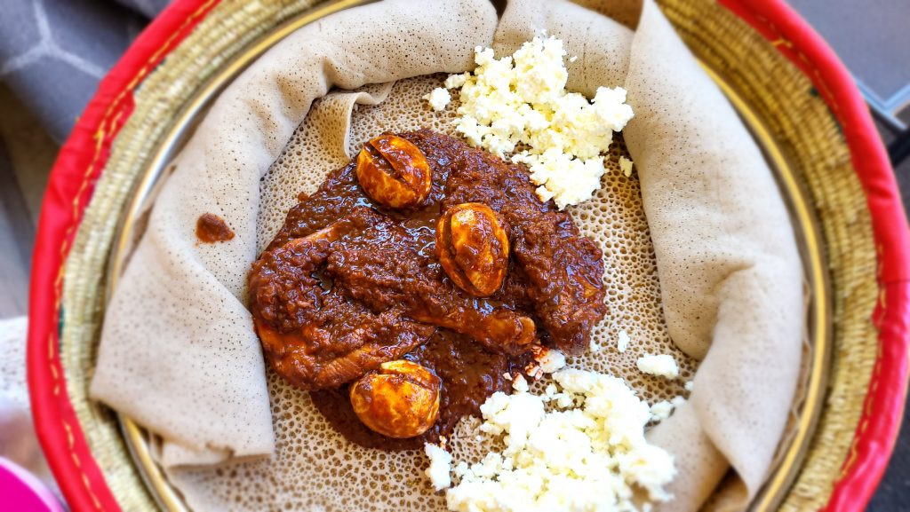
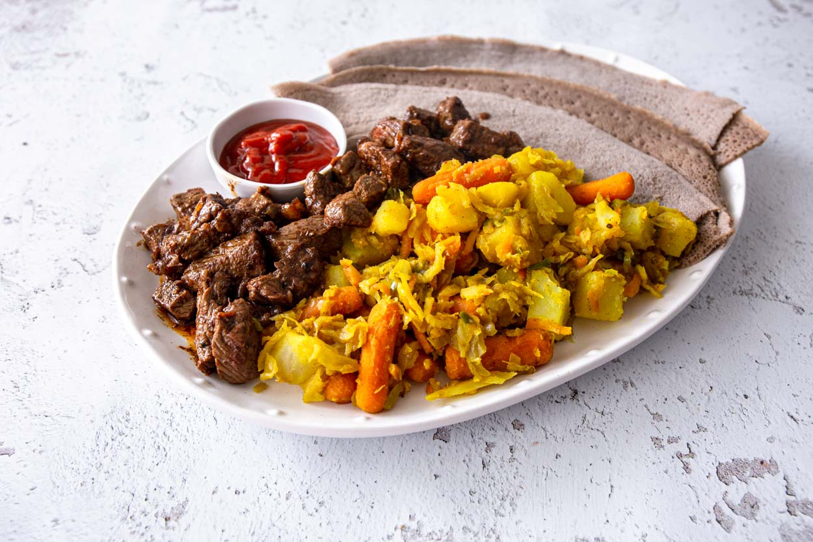
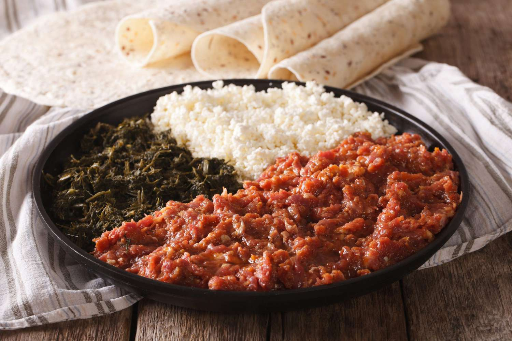

About Ethiopian Food!
Ethiopian cuisine is characterized by its diverse flavors, unique spices, and communal eating tradition with injera, a sourdough flatbread, serving as the base for most meals.
Signature Foods

Injera
Injera is a traditional Ethiopian sourdough flatbread, central to Ethiopian cuisine, often served as a base for various stews and dishes.
$6.99

Doro Wot
Doro Wot is a spicy Ethiopian chicken stew, made with berbere spice blend, onions, garlic, ginger, and served with injera.
$14.99

Tibs
Tibs is a dish featuring sautéed and seasoned beef, lamb, or goat, often served with injera and vegetables.
$16.99

Kitfo
Kitfo is a traditional Ethiopian dish made from minced raw beef, marinated in mitmita (a spicy chili powder) and served with injera or bread.
$19.99